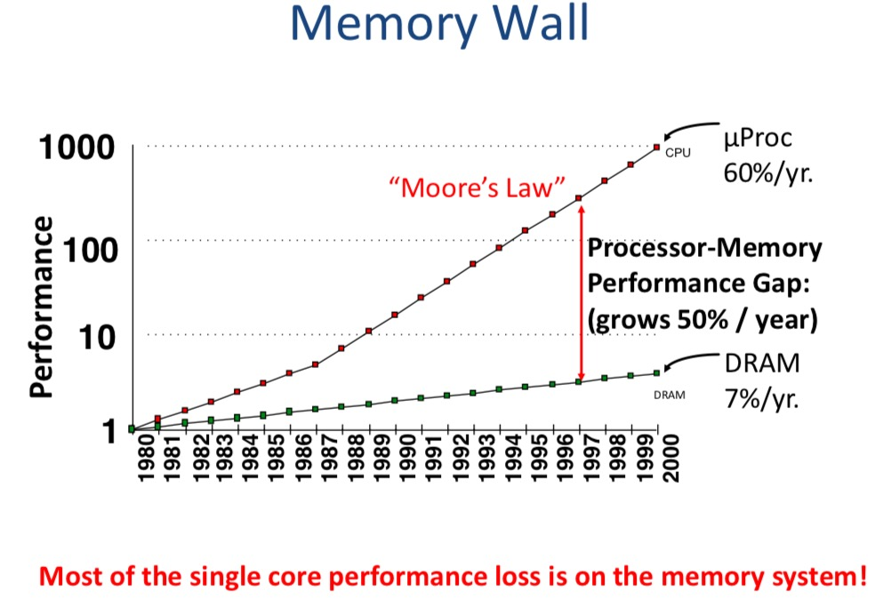

Hardware
Memory Wall: The Motivation of Memory Hierarchy

Parallem Programming
How to Parallelize Your Program
Foster’s Methodology
- Partitioning: Divide the computation to be performed and the data operated on by the computation into small tasks.
- Communication: determine what communication needs to be carried out among the tasks identified in previous step.
- Agglomerate or aggregation: combine tasks and communications identified in the first step into larger tasks.
- Mapping: assign the composite tasks identified in the previous step to processes/threads. This should be done so that communications is minimized and each process/thread gets roughly the same amount of work.
Patterns in Parallelism
Threads … Pthreads
Threads
Process VS Threads:
Process is the unit for resource allocation and a unit of protection. Process has its own address space.
The definition of Thread: sequence of related instructions executed independently of other instruction sequences.
Different Types of Threads
- User-Level Threads
All thread management is done by the application and the kernel is not aware of the existence of threads. - Kernel-Level Threads
- Harware Threads
POSIX Threads
Pthread is a POSIX standard for threads. It has following characteristics:
- Low-level threading libraries.
- Native threading interface for Linux now.
- Use kernel-level thread.
- Developed by the IEEE committees in charge of spefifying a Portable Operating System Interface(POSIX)
- Shared memory.